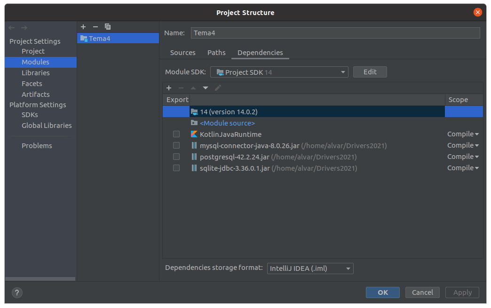
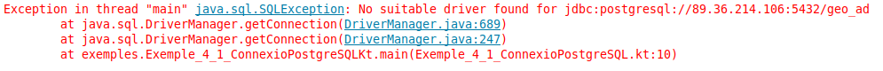
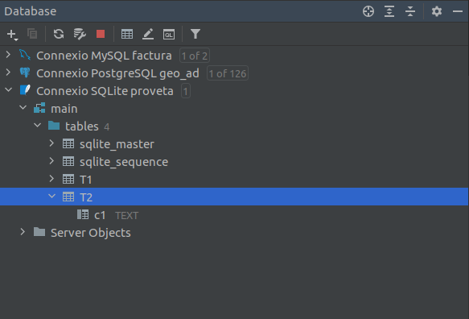

5 - Iniciació a l'API JDBC¶
Ara veurem els elements bàsics de l’API JDBC que permeten a les aplicacions Java o Kotlin comunicar-se amb un SGBD fent servir el llenguatge SQL. Cal que disposeu del connector JDBC dels 3 SGDB que anem a utilitzar: PostgreSQL , MySQL i SQLite. Afegirem els 3 connectors a les biblioteques del projecte. També serà necessari connectar des de IntelliJ amb la utilitat que ens ofereix per a veure les Bases de Dades: View - > Tool Windows -> Database, si no disposeu del DBeaver (o clients espacífics de cada SGBD).
Els drivers JDBC per als distints SGBD són molt fàcils de trobar, fent una senzilla recerca de driver JDBC download i el SGBD que vulgueu. Per més comoditat us pose ací els enllaços:
- PostgreSQL: https://jdbc.postgresql.org/download/postgresql-42.2.24.jar
- MySQL: https://jar-download.com/artifacts/mysql/mysql-connector-java
- SQLite: https://jar-download.com/artifacts/org.xerial/sqlite-jdbc
També teniu, per més comoditat, una carpeta en el curs de Aules amb tots els drivers que ens fan falta
Per tal de poder practicar la connexió i accedir a les dades, tenim una Bases de Dades de prova en cada SGBD:
- PosgreSQL: geo_ad (contrasenya: geo_ad)
- MySQL: factura (contrasenya: factura)
- SQLite: proveta.sqlite , però en realitat crearem les Bases de Dades que ens facen falta
Crearem un projecte nou anomenat Tema4 , per exemple, i li afegirem els controladors JDBC de PostgesSQL , MySQL i SQLite com a biblioteca del projecte. Per a separar les proves dels exercicis, ens creem un paquet anomenat exemples.
En la següent imatge es veu com hem incorporat els drivers al projecte (es fa sobre el projecte F4 - > Modules -> Dependencies)

En els punts següents anem a comentar cada cosa per separat, pas a pas. De tota manera, posem la llista inicial de classes que utilitzarem per a poder connectar i accedir a la Base de Dades:
| Classe | Descripció |
|---|---|
| Driver | Permet connectar a una Base de Dades |
| DriverManager | Permet gestionar tots els drivers instal·lats al sistema |
| Connection | Representa una connexió amb una BD. En una aplicació pot haver més d'una connexió |
| Statement | Permet executar sentències SQL sense paràmetres |
| PreparedStatement | Permet executar sentències SQL amb paràmetres |
| ResultSet | Conté les files resultants d'executar una sentència SELECT |
| DatabaseMetadata | Proporciona informació d'una BD, com per exemple les taules que conté |
| ResultSetMetadata | Proporciona informació sobre un ResultSet: número de columnes, noms de les columnes, tipus, ... |
5.1 - Establiment de la connexió¶
Un objecte de la classe Connection (de l'API JDBC) representarà una connexió a la Base de Dades d'un determinat SGBD. Haurem de tenir el controlador del SGBD inclós en el projecte.
L'objecte Connection l'obtindrem a partir del DriverManager , que havíem comentat que és capaç de gestionar tots els drivers carregats en memòria. El mètode que utilitzarem del DriverManager és el getConnection(url ,usuari ,password), on li passarem les dades de connexió a la Base de Dades d'aquesta manera:
- URL : cadena de connexió seguint el protocol JDBC. Comença sempre per jdbc , el nom del SGBD (separat per dos punts), i la manera d'arribar a la BD, també separat per 2 punts. Aquesta manera d'arribar a la BD dependrà del controlador del SGBD, però d'alguna manera harem d'especificar el servidor , el port de connexió i el nom de la BD o esquema a connectar.
- Usuari i contrasenya : encara que en alguns SGBD (com per exemple SQLite) no seran necessaris.
Aquestes són les url que utilitzarem:
- PostgreSQL : per connectar-nos al servidor situal a l'adreça 89.36.214.106 , que escolta el port per defecte (5432), i a la Base de Dades anomenada geo_ad , la cadena serà:
jdbc:postgresql://89.36.214.106:5432/geo_ad
- MySQL : el servidor és el mateix de PostgreSQL, el port per defecte és 3306, i si volem connectar a la Base de Dades factura :
jdbc:mysql://89.36.214.106:3306/factura
- SQLite : no haurem d'especificar ni servidor ni port (ni posteriorment usuari ni contrasenya); únicament el nom del fitxer amb la ruta. Si volem connectar a la Base de Dades situada en el directori /home/usuari/BD_SQLite , i anomenada proveta.sqlite :
jdbc:sqlite:/home/usuari/BD_SQLite/proveta.sqlite
__
Mirem tres exemple de connexió, un per a cada Base de Dades de prova que tenim en els diferents SGBD que ens hem plantejat connectar. Observeu com només hem canviat la URL , a banda de l'usuari i contrasenya, clar (en SQLite no hi haurà). I el millor de tot és que una vegada feta la connexió, farem el mateix tractament siga quin siga el SGBD al qual ens hem connectat, com veurem amb posterioritat.
En aquestos exemples, tan sols fem la connexió. Si no es produeix cap error és que s'ha pogut connectar.
- PostgreSQL
Guardeu el següent codi en un fitxer Kotlin anomenat Exemple_4_1_ConnexioPostgreSQL.kt :
package exemples
import java.sql.DriverManager
fun main(args: Array<String>) {
val url = "jdbc:postgresql://89.36.214.106:5432/geo_ad"
val usuari = "geo_ad"
val password = "geo_ad"
val con = DriverManager.getConnection(url, usuari, password)
System.out.println("Connexió completada")
con.close()
}
Si ens hem oblidat d'incorporar el Driver al projecte, ens donarà el següent error:

que com es veu, ens està indicant que no ha pogut trobar el driver per a eixa URL. Senzillament incorporarem el driver de PostgreSQL en les F4 - > Modules -> Dependencies
- MySQL
Guardeu el següent codi en un fitxer Kotlin anomenat Exemple_4_2_ConnexioMySQL.kt :
package exemples
import java.sql.DriverManager
fun main(args: Array<String>) {
val url = "jdbc:mysql://89.36.214.106:3306/factura"
val usuari = "factura"
val password = "factura"
val con = DriverManager.getConnection(url, usuari, password)
System.out.println("Connexió completada")
con.close()
}
- SQLite
Guardeu el següent codi en un fitxer Kotlin anomenat Exemple_4_3_ConnexioSQLite.kt:
package exemples
import java.sql.DriverManager
fun main(args: Array<String>) {
val url = "jdbc:sqlite:proveta.sqlite"
val con = DriverManager.getConnection(url)
System.out.println("Connexió completada")
con.close()
}
Com que no hem posat ruta, utilitzarà el fitxer proveta.sqlite en el directori actiu, és a dir, en l'arrel del projecte. Si no existia, el crearà. També podríem posar la ruta d'aquesta manera:
String url = "jdbc:sqlite:/home/usuari/BD_SQLite/proveta.sqlite";
en aquest cas haureu de cuidar que existesca la ruta del fitxer, sinó es produirà una SQLException
Observem les següents qüestions en els quatre programes equivalents anteriors:
- El DriverManager és capaç de trobar el driver adequat a través de la url proporcionada (sobretot si el driver està carregat en memòria), i és qui ens proporciona l'objecte Connection per mig del mètode getConnection(). Hi ha una altra manera d'obtenir el Connection per mig de l'objecte Driver , però també serà passant indirectament pel DriverManager. Ens aconformarem amb la manera que hem connectat
- Si no es troba la classe del driver (per no tenir-lo en les llibreries del projecte, o haver escrit malament el seu nom) es produirà l'excepció ClassNotFoundException.
- Si no es pot establir la connexió per alguna raó es produirà l'excepció SQLException.
- L'objecte Connection mantindrà una connexió amb la Base de Dades des del moment de la creació fins el moment de tancar-la amb close(). És molt important tancar la connexió, no solament per alliberar la memòria del nostre ordinador (que en tancar l'aplicació s'alliberaria), sinó sobretot per tancar la sessió oberta en el Servidor de Bases de Dades.
- En el cas de SQLite només s'ha d'especificar la url. No hem dit ni usuari ni contrasenya, que no tenen sentit en aquest SGBD monousuari.
5.2 - Peticions bàsiques¶
Per escriure sentències SQL, JDBC disposa dels objectes Statement. Es tracta d’objectes que s'han de crear a partir de Connection , els quals poden enviar sentències SQL al SGBD connectat per a que s'executen amb el mètode executeQuery o executeUpdate.
Hi ha una variant del Statement , anomenada PreparedStatement que ens dóna més versatilitat per a posar paràmetres i executar la sentència d'una altra manera. El veurem en la pregunta 6.5.
La diferència entre els dos mètodes que executen sentències SQL és:
- El mètode executeQuery serveix per executar sentències de les quals s’espera que tornen dades , és a dir, són consultes SELECT.
- En canvi, el mètode executeUpdate serveix específicament per a sentències que no retornen dades. Serviran per a modificar la Base de Dades connectada (INSERT , DELETE , UPDATE , fins i tot CREATE TABLE) .
Sentències que no retornen dades
Les executem amb el mètode executeUpdate. Seran totes les sentències SQL excepte el SELECT , que és la de consulta. És a dir, ens servirà per les següents sentències:
- Sentències que canvien les estructures internes de la BD on es guarden les dades (instruccions conegudes amb les sigles DDL , de l’anglès Data Definition Language), com per exemple CREATE TABLE , CREATE VIEW , ALTER TABLE , DROP TABLE , ...,
- Sentències per atorgar permisos als usuaris existents o crear-ne de nous (subgrup d’instruccions conegudes com a DCL o Data Control Language), com per exemple GRANT.
- I també les sentències per a modificar les dades guardades fent servir les instruccions INSERT , UPDATE i DELETE.
Encara que es tracta de sentències molt dispars, des del punt de vista de la comunicació amb el SGBD es comporten de manera molt similar, seguint el patró següent:
-
Instanciació del Statement a partir d’una connexió activa.
-
Execució d’una sentència SQL passada per paràmetre al mètode executeUpdate.
-
Tancament de l’objecte Statement instanciat.
Mirem aquest exemple, en qual crearem una taula molt senzilla en la Base de Dades SQLite proveta.sqlite.
Copieu el següent codi en un fitxer Kotlin anomenat Exemple_4_11_provaSQLIteCreacioTaula.kt :
package exemples
import java.sql.DriverManager
fun main(args: Array<String>) {
val url = "jdbc:sqlite:proveta.sqlite"
val con = DriverManager.getConnection(url)
val st = con.createStatement ()
st.executeUpdate("CREATE TABLE T2 (c1 TEXT)")
st.close()
con.close()
}
Des de la perspectiva de Bases de Dades (esquerra) podrem comprovar que ara ja existeix la taula, igual que des del DBeaver (dreta):
|  |  |
|---|---|
Sentències que retornen dades
Les executem amb el mètode executeQuery. Servirà per a la sentència SELECT , que és la de consulta.
Les dades que ens torne aquesta sentència les haurem de guardar en un objecte de la classe ResultSet , és a dir conjunt de resultat. Per tant, l’execució de les consultes tindrà un forma semblant a la següent:
val rs = st.executeQuery(sentenciaSQL)
L’objecte ResultSet conté el resultat de la consulta organitzat per files, de manera que en cada moment es pot consultar una fila. Per a anar visitant totes les files d’una a una, anirem cridant el mètode next() de l'objecte ResultSet , ja que cada vegada que s'execute next s’avançarà a la següent fila. Immediatament després d’una execució, el ResultSet es troba posicionat just abans de la primera fila, per tant per accedir a la primera fila caldrà executar next una vegada. Quan les files s’acaben, el mètode next retornarà fals.
Des de cada fila es podrà accedir al valor de les seues columnes fent servir uns quants mètodes get disponibles segons el tipus de dades a retornar i passant per paràmetre el número de columna que desitgem obtenir. El nom dels mètodes comença per get seguit del nom del tipus de dades. Així, si volem recuperar la segona columna, sabent que és una dada de tipus String caldrà executar:
rs.getString(2)
Les columnes es comencen a comptar a partir del valor 1 (no zero). La major part dels SGDB suporten la possibilitat de passar per paràmetre el nom de la columna, però no tots, així que normalment s'opta pel paràmetre numèric.
En el següent exemple, mostrem el contingut de les dues primeres columnes de la taula INSTITUT de la Base de Dades geo_ad de PostgreSQL , que resulten ser el codi numèric de l'Institut i el seu nom.
Coieu el següent codi en un fitxer Kotlin anomenat Exemple_4_12_consultaPostgreSQL.kt :
package exemples
import java.sql.DriverManager
fun main(args: Array<String>) {
val url = "jdbc:postgresql://89.36.214.106:5432/geo_ad"
val usuari = "geo_ad"
val password = "geo_ad"
val con = DriverManager.getConnection(url, usuari, password)
val st = con.createStatement()
val rs = st.executeQuery("SELECT * FROM institut")
while (rs.next()) {
print("" + rs.getInt(1) + "\t")
println(rs.getString(2))
}
st.close()
con.close()
}
En aquest exemple, on accedim a MySQL , accedirem a una altra taula. Els canvis són els mateixos, la URL, usuari contrasenya i el nom de la taula.
Copieu el següent codi en un fitxer Kotlin anomenat Exemple_4_13_consultaMySQL.kt :
package exemples
import java.sql.DriverManager
fun main(args: Array<String>) {
val url = "jdbc:mysql://89.36.214.106:3306/factura"
val usuari = "factura"
val password = "factura"
val con = DriverManager.getConnection(url, usuari, password)
val st = con.createStatement()
val rs = st.executeQuery("SELECT * FROM poble")
while (rs.next()) {
print("" + rs.getInt(1) + "\t")
println(rs.getString(2))
}
st.close()
con.close()
}
No reutilització de Statement ni ResultSet
És un error prou habitual per inesperat el fet d'intentar reutilitzar un mateix ResultSet per a arreplegar més d'una consulta. I el mateix amb el Statement. Bé siga per una mala implementació o un bug o el que siga, el comportament pot ser imprevisible. I per tant no val la pena arriscar-se.
Us aconselle que si en una aplicació teniu més d'una consulta de les que retornen dades, utilitzeu un Statement i un ResultSet diferents per a cadascuna. En Kotlin ho podrem aconseguir declarant-los sempre com a val (i no com a var)
No hi ha problema en utilitzar el mateix Statement per a moltes consultes de les que no retornen dades.
Assegurar l'alliberament de recursos
Les instàncies de Connection i les de Statement guarden, en memòria, molta informació relacionada amb les execucions realitzades. A més, mentre continuen actives mantenen en el SGBD una sessió oberta, que suposarà un conjunt important de recursos oberts, destinats a servir de forma eficient les peticions dels clients. És important tancar aquestos objectes per a alliberar recursos tant del client com del servidor.
Si en un mateix mètode hem de tancar un objecte Statement i el Connection a partir del qual l'hem creat, s'haurà de tancar primer el Statement i després el Connection. Si ho fem al revés, quan intentem tancar el Statement ens saltarà una excepció de tipus SQLException , ja que el tancament de la connexió l’hauria deixat inaccessible.
A més de respectar l’orde, caldrà assegurar l’alliberament dels recursos situant les operacions de tancament dins un bloc finally. D’aquesta manera, encara que es produesquen errors, no es deixaran d’executar les instruccions de tancament.
Cal tenir en compte encara un detall més quan siga necessari realitzar el tancament de diversos objectes a la vegada. En aquest cas, encara que les situàrem una darrera l’altra, totes les instruccions de tancament dins el bloc finally , no seria prou garantia per assegurar l’execució de tots els tancaments, ja que, si mentre es produeix el tancament d’un dels objectes es llança una excepció, els objectes invocats en una posició posterior a la del que s’ha produït l’error no es tancaran.
La solució d’aquest problema passa per evitar el llançament de qualsevol
excepció durant el procés de tancament. Una possible forma és encapsular cada
tancament entre sentències try-catch dins del finally
try{
//_sentències que poden llançar una excepció_
...
} catch (ex: SQLException) {
// _captura i tractament de l'excepció_
...
}finally{
try {
stm1.close()
} catch (ex: SQLException) {...}
try {
stm2.close()
} catch (ex: SQLException) {...}
...
try {
con.close()
} catch (ex: SQLException) {...}
}
De vegades, l’error en un tancament es produeix perquè l’objecte mai ha arribat a instanciar-se i, per tant, la variable presenta un valor null , o perquè ja ha estat tancat amb anterioritat. Ambdós casos són previsibles, i es pot evitar l'error fent servir una instrucció condicional que evite tancar-lo quan ja estava tancat.
...
try {
//_Assegurem que la connexió està instanciada i oberta_
if (con!=null && !con.isClosed() {
// _tanquem la connexió_
con.close()
}
} catch (ex: SQLException) { ... }
5.3 - Exemple¶
A continuació posarem un exemple molt senzill, el dels empleats, en el qual primer crearem la taula per a guardar les dades, després introduirem les dades, les modificarem, i per últim les consultarem. D'aquesta manera podrem veure tots els exemples de sentències SQL.
Les dades són les mateixes que en altres ocasions:
| num | nom | depart | edat | sou |
|---|---|---|---|---|
| 1 | Andreu | 10 | 32 | 1000.00 |
| 2 | Bernat | 20 | 28 | 1200.00 |
| 3 | Claudia | 10 | 26 | 1100.00 |
| 4 | Damià | 10 | 40 | 1500.00 |
La clau principal serà el camp num de tipus enter. El nom serà de text, el departament i l'edat també enters, mentre que el sou serà real.
Per a no interferir entre tots, utilitzarem la Base de Dades SQLite, on cadascú guardarà en un fitxer seu les dades. Haureu de cuidar la ruta, que siga on voleu guardar la vostra Base de Dades. Si no poseu res en la ruta, es guardarà en el directori actiu, que és l'arrel del projecte.
Creació de la taula
La sentència SQL que crea la taula en una Base de Dades SQLite serà així:
CREATE TABLE EMPLEATS (
num INTEGER CONSTRAINT cp_emp PRIMARY KEY,
nom TEXT,
depart INTEGER,
edat INTEGER,
sou REAL );
Hem d'observar que el mètode del Statement a utilitzar és executeUpdate() , ja que la sentència de creació no torna res (no és un SELECT)
Copieu el següent codi en un fitxer Kotlin anomenat Exemple_4_21_EmpleatsCrearTaula.kt :
package exemples
import java.sql.DriverManager
fun main(args: Array<String>) {
val url = "jdbc:sqlite:Empleats.sqlite"
val con = DriverManager.getConnection(url)
val st = con.createStatement()
val sentSQL = "CREATE TABLE EMPLEAT(" +
"num INTEGER CONSTRAINT cp_emp PRIMARY KEY, " +
"nom TEXT, " +
"depart INTEGER, " +
"edat INTEGER, " +
"sou REAL " +
")"
st.executeUpdate(sentSQL)
st.close();
con.close()
}
Si voleu veure el resultat, podeu fer-ho des del DBeaver.
Inserció de dades
També volem introduir les dades que es poden veure a la taula anterior. Crearem un Statetement que reutilitzarem per anar escrivint totes les sentències INSERT. Recordeu que no és problema la reutilització si gastem el executeUpdate().
Copieu el següent codi en un fitxer Kotlin anomenat Exemple_4_22_EmpleatsInserir.kt :
package exemples
import java.sql.DriverManager
fun main(args: Array<String>) {
val url = "jdbc:sqlite:Empleats.sqlite"
val con = DriverManager.getConnection(url)
val st = con.createStatement()
st.executeUpdate("INSERT INTO EMPLEAT VALUES (1,'Andreu',10,32,1000.0)")
st.executeUpdate("INSERT INTO EMPLEAT VALUES (2,'Bernat',20,28,1200.0)")
st.executeUpdate("INSERT INTO EMPLEAT VALUES (3,'Clàudia',10,26,1100.0)")
st.executeUpdate("INSERT INTO EMPLEAT VALUES (4,'Damià',10,40,1500.0)")
st.close()
con.close()
}
Ara sí que és un bon moment per a consultar la taula des del DBeaver. Si en ell ja teníeu oberta la taula, haureu de refrescar.
Modificació de dades
Ara modificarem les dades. Senzillament augmentem el sou de tots els empleats en un 5%. I també modifiquem el departament de l'empleat 3, posant-li el departament 20.
Copieu el següent codi en un fitxer Kotlin anomenat Exemple_4_23_EmpleatsModificar.kt :
ackage exemples
import java.sql.DriverManager
fun main(args: Array<String>) {
val url = "jdbc:sqlite:Empleats.sqlite"
val con = DriverManager.getConnection(url)
val st = con.createStatement()
st.executeUpdate("UPDATE EMPLEAT SET sou = sou * 1.05")
st.executeUpdate("UPDATE EMPLEAT SET depart=20 WHERE num = 3")
st.close()
con.close()
}
Consultar les dades
Vegem de quina manera podem mostrar per pantalla tots els empleats del que cobren més de 1.100€. Ara el mètode que utilitzarem és executeQuery() , ja que aquesta consulta sí que torna dades.
Copieu el següent codi en un fitxer Kotlin anomenat Exemple_4_24_EmpleatsConsultar.kt :
package exemples
import java.sql.DriverManager
fun main(args: Array<String>) {
val url = "jdbc:sqlite:Empleats.sqlite"
val con = DriverManager.getConnection(url)
val st = con.createStatement()
val sentenciaSQL = "SELECT * FROM EMPLEAT WHERE sou > 1100"
val rs = st.executeQuery(sentenciaSQL)
System.out.println("Núm. \tNom \tDep \tEdat \tSou")
System.out.println("-----------------------------------------")
while (rs.next()) {
print("" + rs.getInt(1) + "\t")
print(rs.getString(2) + "\t")
print("" + rs.getInt(3) + "\t")
print("" + rs.getInt(4) + "\t")
println(rs.getDouble(5))
}
rs.close()
st.close()
con.close()
}
Podeu observar com es pot usar un bucle while per obtenir el valor de totes les files retornades. També podeu veure els diferents mètodes que retornen les dades de cada columna en funció del tipus: getInt() , getString() , getDouble() , ...
Llicenciat sota la Llicència Creative Commons Reconeixement CompartirIgual 2.5